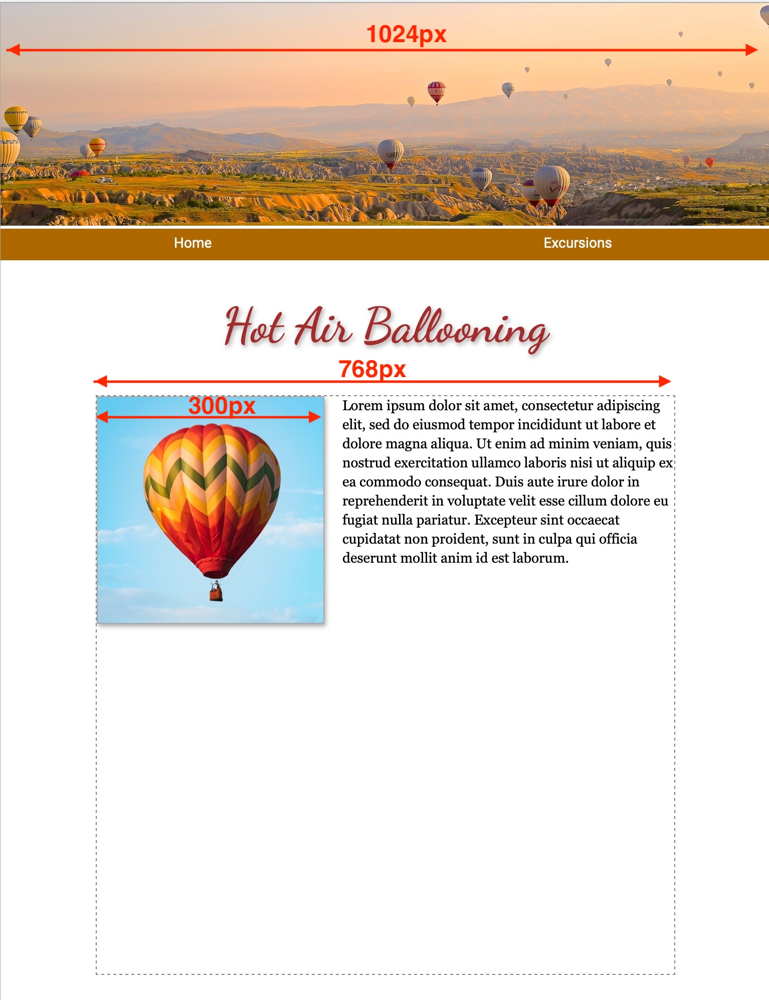
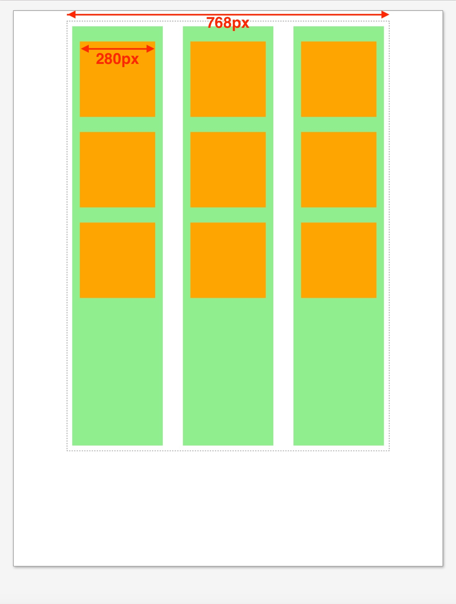
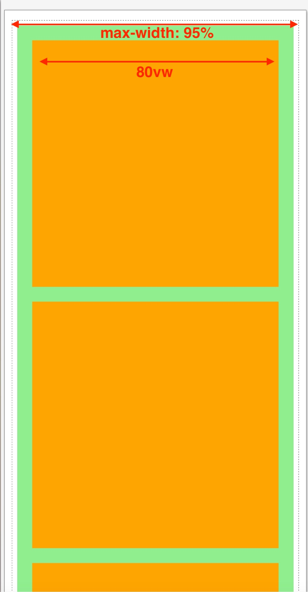

Responsive design uses variable, maximum, and minimum width specifications to make photos and text fit into whatever browser window size the user sets, whether on a desktop, laptop, tablet, or smartphone.
In this example of a fixed-width or “print replica” page, the page width has been set to 1024px so it approximates a sheet of letter-size paper on-screen. The page includes a banner image, also 1024px wide, a text box (div) of 768px, and a floated image of 300px.
Can I specify width in % or vw?
To retain the letter-size page appearance, these tag widths cannot be specfied in percent or vw (viewport widths).
Can I add “max-width”?
The supplemental style, “max-width: 100%;” can be added so that the page contracts to fit within smaller browser window sizes.
Can I add a media query?
For smartphones it would be nice to have the floated image full-width and to enlarge the text, and to increase the line leading of the text.
=
This example shows a mockup of a catalog page that uses a 3-column grid layout (grid-template-columns: auto auto auto;), columns in green and future catalog items in orange.
For the smartphone media query, the column number was changed to 1 (grid-template-columns: auto;) and the item width was set to 80vw (viewport widths).